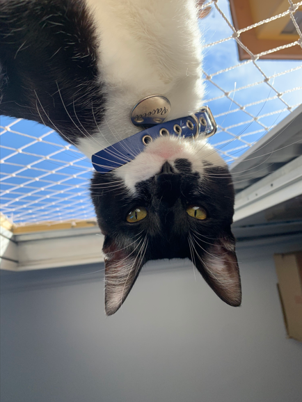
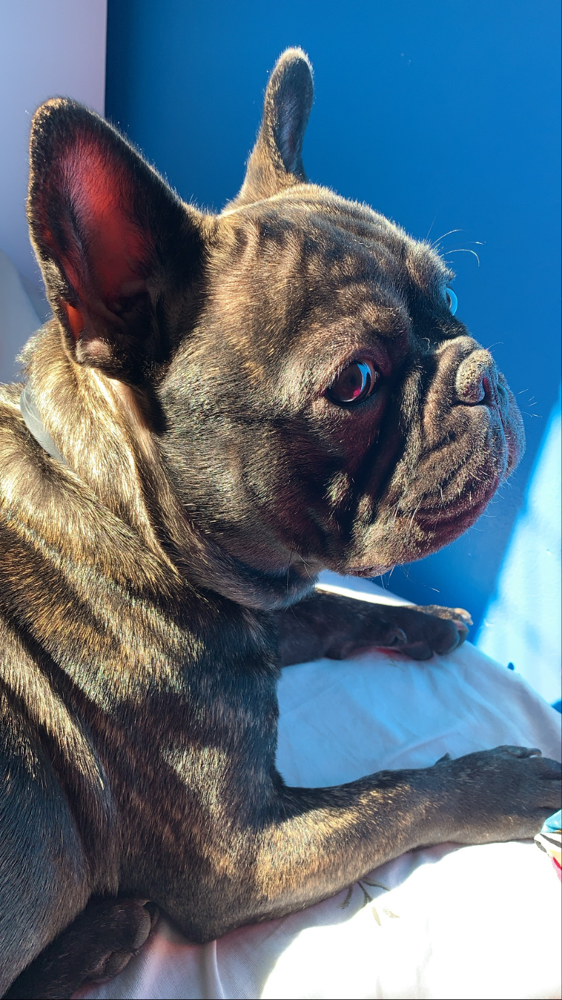
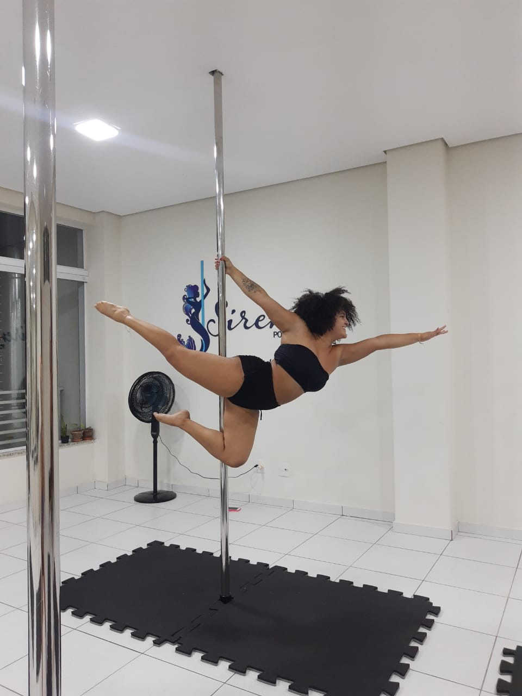

Eu sou a Yasmim Lira, tenho 22 anos e sou formada em Análise e Desenvolvimento de Sistemas. Desde que descobri o mundo da tecnologia, me apaixonei e estou buscando voltar a trabalhar com o que amo. Sou aquariana com ascendente em câncer, o que me faz ser uma pessoa emotiva e racional ao mesmo tempo. Em casa, tenho dois companheiros de quatro patas, o Paçoca e o Zyon, um gato e um cachorro que são como irmãos inseparáveis, mesmo brigando de vez em quando. No meu tempo livre, adoro gravar vídeos fazendo skincare, tirar fotos, ouvir músicas e assistir filmes e séries. Além disso, sou praticante do esporte que mais amo: o poledance.
Quem sou eu?
Venha me conhecer👋
Olá, nerd!
Skincare
Paçoca e Zyon


Poledance
